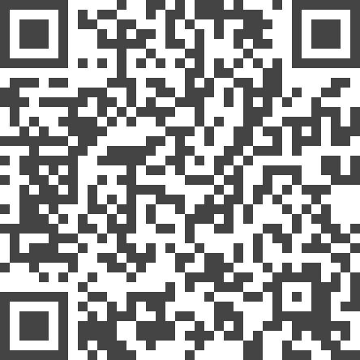

chARpack: The Chemistry Augmented Reality Package

Authors. Tobias Rau, Michael Sedlmair, Andreas Köhn
Venue. JCIM (2024)
Abstract. Off-loading visualization and interaction into virtual reality (VR) using head-mounted displays (HMDs) has gained considerable popularity in simulation sciences, particularly in chemical modeling. Because of its unique way of soft immersion, augmented reality (AR) HMD technology has even more potential to be integrated into the everyday workflow of computational chemists. In this work, we present our environment to explore the prospects of AR in chemistry and general molecular sciences: The chemistry in Augmented Reality package (chARpack). Besides providing an extensible framework, our software focuses on a seamless transition between a 3D stereoscopic view with true 3D interactions and the traditional desktop PC setup to provide users with the best setup for all tasks in their workflow. Using feedback from domain experts, we discuss our design requirements for this kind of hybrid working environment (AR + PC), regarding input, features, degree of immersion, and collaboration.
